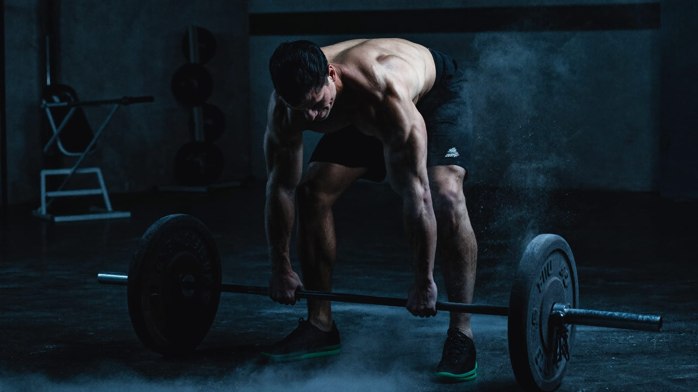

Das 3-Tage-System
Maximale Ergebnisse mit minimaler Zeit — der Trainingsplan für Männer mit Job, Familie und 3 Stunden pro Woche.

Inhalt
- Warum Push/Pull/Legs — und warum 3 Tage reichen
- Die Physiologie: Warum Muskeln wirklich wachsen
- Minimum Effective Dose: die Volumen-Staffel
- Der Push/Pull/Legs-Plan
- Progressive Überlastung: die eine Regel, die zählt
- RIR statt Dauer-Versagen: intelligenter bis zum Reiz
- Autoregulation: die Grün/Gelb/Rot-Ampel
- Deload: Rückschritt als Werkzeug
- Wiederholungsbereiche: Kraft, Hypertrophie, Ausdauer
- Cardio richtig dosiert: Zone 2 & VO2max
- Krafttraining als stärkster Longevity-Hebel
- Kälte, Wärme & Regeneration — richtig getimt
- Technik-Cues für die Grundübungen
- Die häufigsten Fehler
- Dein 12-Wochen-Aufbau
- Messen: woran du Fortschritt erkennst
1. Warum Push/Pull/Legs — und warum 3 Tage reichen
Die meisten Männer scheitern nicht an zu wenig Training, sondern an einem Plan, der nicht zu ihrem Leben passt. 5 oder 6 Einheiten klingen ambitioniert — aber sie überleben die erste stressige Woche nicht. Drei feste Einheiten pro Woche treffen für viele den Sweet Spot: genug Reiz für Muskelaufbau und Kraft, genug Erholung, und realistisch genug, um sie monatelang durchzuziehen.
Die klarste Aufteilung für drei Tage ist Push / Pull / Legs — Drücken, Ziehen, Beine. Sie folgt der Logik der Bewegung, nicht der Anatomie-Lehrbuchseite: An einem Tag arbeiten alle Muskeln, die drücken (Brust, Schultern, Trizeps), am nächsten alle, die ziehen (Rücken, hinterer Schulterbereich, Bizeps), am dritten die komplette Beinkette. So überschneiden sich die Muskeln innerhalb einer Einheit sinnvoll, statt sich gegenseitig im Weg zu stehen.
| Split | Push (Drücken) | Pull (Ziehen) | Legs (Beine) |
|---|---|---|---|
| Primär | Brust, vordere/seitliche Schulter | Latissimus, oberer Rücken | Quadrizeps, Gesäß, Beinbeuger |
| Sekundär | Trizeps | Bizeps, hintere Schulter | Waden, Core, unterer Rücken |
Der entscheidende Hebel bei drei Einheiten ist die Frequenz im Verhältnis zum Volumen. Studienlage und Praxis deuten übereinstimmend darauf hin: Wie oft du einen Muskel pro Woche reizt, ist weniger wichtig als die Gesamtzahl harter Sätze, die du über die Woche verteilst. Drei Ganzkörper-nahe Einheiten oder ein rotierender PPL bringen jeden Muskelbereich 1–2× pro Woche an den Reiz — genug, um die Muskelproteinsynthese wiederholt anzustoßen, ohne dass Regeneration und Alltag kollabieren.
2. Die Physiologie: Warum Muskeln wirklich wachsen Level 1 · Pflicht
Bevor du irgendeinen Plan machst, verstehe den Mechanismus. Muskelwachstum (Hypertrophie) ist keine Belohnung dafür, dass du „müde" wirst oder „Pump" spürst. Es ist die Anpassung an ein sehr spezifisches Signal: hohe mechanische Spannung an der einzelnen Muskelfaser über einen ausreichenden Bewegungsumfang.
Wenn eine Faser gegen einen schweren Widerstand arbeitet, registrieren Sensoren in der Zellmembran diese Spannung (Mechanotransduktion). Das übersetzt den mechanischen Reiz in ein chemisches Signal, das die Muskelproteinsynthese hochfährt — vereinfacht: die Zelle beginnt, mehr kontraktiles Eiweiß einzubauen. Wiederholst du diesen Reiz regelmäßig und lässt dazwischen Erholung und Protein zu, wächst der Querschnitt der Faser. Das ist der ganze Zauber.
Drei Konsequenzen aus diesem Mechanismus, die deinen Plan bestimmen sollten:
- Mechanische Spannung ist der Haupttreiber, nicht Schweiß, Muskelkater oder „Brennen". Muskelkater misst Schädigung und Ungewohntheit, nicht Wachstum — er kann fehlen, während du bestens wächst.
- Spannung entsteht durch Last oder durch Nähe zum Versagen. Ein schwerer Satz mit 6 Wiederholungen und ein leichterer Satz, den du bis kurz vors Versagen führst, erzeugen beide hohe Spannung in den zuletzt rekrutierten Fasern. Deshalb funktioniert ein weiter Wiederholungsbereich (siehe Abschnitt 9).
- Voller Bewegungsumfang schlägt Teilwiederholungen — besonders die gedehnte Position unter Last (z. B. tiefe Kniebeuge, gedehnte Brust beim Fliegenden) setzt einen starken Wachstumsreiz.
3. Minimum Effective Dose: die Volumen-Staffel Level 2 · sinnvoll
Volumen — die Zahl harter Arbeitssätze pro Muskelgruppe und Woche — ist der wichtigste einstellbare Regler für Hypertrophie. Aber „mehr ist besser" gilt nur bis zu einem Punkt. Danach steigt die Ermüdung schneller als der Ertrag, und irgendwann fressen zu viele Sätze deine Regeneration auf, ohne mehr Muskeln zu bringen. Das Ziel ist die Minimum Effective Dose: die kleinste Menge, die noch klar Fortschritt erzeugt.
Ein „harter Satz" heißt: ein Arbeitssatz, den du bis auf 0–3 Wiederholungen ans Versagen heranführst (siehe RIR, Abschnitt 6). Aufwärmsätze zählen nicht. Als Orientierung, gestaffelt nach Trainingsalter:
| Level | Harte Sätze / Muskel / Woche | Warum |
|---|---|---|
| Einsteiger (0–1 J.) | ca. 6–8 | Schon wenig Reiz bringt große Anpassung. Fokus auf Technik und Progression, nicht auf Masse an Sätzen. |
| Fortgeschritten (1–3 J.) | ca. 8–12 | Der Körper braucht mehr Reiz für dieselbe Anpassung. Volumen wird zum Haupthebel. |
| Erfahren (3+ J.) | ca. 12–16 | Nah am nutzbaren Maximum. Darüber steigt meist nur die Ermüdung, selten der Muskel. |
Diese Zahlen sind Richtwerte, keine Gesetze. Der Clou der Minimum Effective Dose: Starte am unteren Ende deiner Staffel. Solange du bei gleichem Volumen Woche für Woche mehr Gewicht oder Wiederholungen schaffst, brauchst du nicht mehr Sätze — dein aktuelles Volumen funktioniert. Erst wenn der Fortschritt über 2–3 Wochen stehenbleibt und Schlaf, Protein und Technik stimmen, fügst du behutsam 1–2 Sätze pro Muskel hinzu.
4. Der Push/Pull/Legs-Plan
Du rotierst drei Einheiten über die Woche — zum Beispiel Montag (Push), Mittwoch (Pull), Freitag (Legs). Jede Übung mit 3 Arbeitssätzen, machbar in 50–60 Minuten. Trag jede Einheit im kostenlosen MaleMetrix Tracker ein — er schlägt dir automatisch dein letztes Gewicht vor.
| Push (Drücken) | Pull (Ziehen) | Legs (Beine) |
|---|---|---|
| Bankdrücken / Brustpresse | Klimmzug / Latzug | Kniebeuge / Beinpresse |
| Schulterdrücken | Rudern (Langhantel/Kabel) | Rumänisches Kreuzheben |
| Schrägbankdrücken | Latzug eng / Kabelzug | Ausfallschritte / Beinpresse |
| Seitheben | Face Pull / Reverse Fly | Beinbeuger |
| Trizeps (Kabel/Dips) | Bizeps (Kurzhantel/Kabel) | Hip Thrust |
| Core (Plank) | Core (Beinheben) | Waden + Core |
Wer nur zweimal in der Woche ins Gym kommt, fährt Push/Pull/Legs einfach als rollende Rotation weiter (Woche 1: P–P–L, Woche 2: P–L–P …) — jeder Muskel wird so alle 4–5 Tage getroffen. Wer viermal kann, hängt eine zweite Push- oder Pull-Einheit an und schiebt das Wochenvolumen in Richtung des oberen Endes seiner Staffel.
5. Progressive Überlastung: die eine Regel, die zählt Level 1 · Pflicht
Muskeln und Kraft wachsen nur, wenn der Reiz über die Zeit steigt. Aus Abschnitt 2 weißt du warum: Der Körper passt sich exakt an die Anforderung an, der er ausgesetzt ist. Bleibt die Last gleich, ist die Anpassung abgeschlossen — es gibt keinen Grund mehr, teures Muskelgewebe aufzubauen. Progressive Überlastung ist deshalb kein Extra, sondern der Motor. Ohne sie ist selbst der beste Plan nur teures Aufwärmen.
Du steigerst den Reiz auf mehreren Wegen — in dieser Reihenfolge der Priorität:
- Mehr Wiederholungen beim gleichen Gewicht (innerhalb deiner Zielspanne).
- Mehr Gewicht, sobald du die obere Spanne sauber erreichst.
- Bessere Ausführung — mehr Bewegungsumfang, kontrolliertere Exzentrik, weniger Schwung.
- Ein Zusatzsatz pro Muskel (Volumen), wenn 1–3 über Wochen nicht mehr greifen.
Das einfachste System dafür ist doppelte Progression:
- Wähle pro Übung eine Wiederholungsspanne, z. B. 6–10.
- Bleib beim Gewicht, bis du in allen Sätzen die obere Grenze (10) sauber schaffst.
- Dann erhöhe das Gewicht um die kleinste Stufe (1,25–2,5 kg) und arbeite dich wieder hoch.
6. RIR statt Dauer-Versagen: intelligenter bis zum Reiz Level 2 · sinnvoll
Lange galt: Ein Satz „zählt" nur, wenn du bis zum kompletten Muskelversagen gehst. Der Mechanismus dahinter ist real — nahe am Versagen werden die meisten Fasern rekrutiert und maximal unter Spannung gesetzt. Aber „nahe" reicht. Die Studienlage deutet darauf hin, dass 1–3 Wiederholungen in Reserve praktisch denselben Wachstumsreiz liefern wie das absolute Versagen — bei deutlich weniger Ermüdung, Verletzungsrisiko und Technikverfall.
Dafür steuerst du über RIR — Reps in Reserve: Wie viele saubere Wiederholungen hättest du am Satzende noch geschafft?
| RIR | Gefühl am Satzende | Einsatz |
|---|---|---|
| 0 | Absolutes Versagen, keine weitere Wdh. möglich | Selten, nur an Isolationsübungen |
| 1–2 | Klar hart, letzte Wdh. langsam | Standard für die meisten Arbeitssätze |
| 2–3 | Anstrengend, aber noch Reserve | Grundübungen, Technik-Priorität, hohe Last |
| 4+ | Zu leicht | Nur Aufwärmen — kein Wachstumsreiz |
Warum das gerade für Männer mit Job, Familie und Stress der klügere Weg ist: Muskelversagen erzeugt überproportional viel zentrale Ermüdung. Es belastet Nervensystem und Gelenke, verlängert die Erholung bis zur nächsten Einheit und lässt die Technik in den letzten, riskanten Wiederholungen zerfallen. Wenn deine Regeneration ohnehin durch Schlafmangel und Alltagsstress begrenzt ist, holst du mit RIR 1–2 fast den vollen Reiz zu einem Bruchteil der „Erholungskosten". Das absolute Versagen ist ein Werkzeug für Einzelfälle — kein Dauerzustand.
7. Autoregulation: die Grün/Gelb/Rot-Ampel Level 3 · Biohacking
Ein Plan auf Papier geht davon aus, dass jeder Tag gleich ist. Dein Körper weiß es besser. Schlaf, Stress, Ernährung und Regeneration schwanken — und damit deine Leistungsfähigkeit an einem konkreten Tag. Autoregulation heißt: Du passt Volumen und Intensität an deine Tagesform an, statt stur die geplanten Zahlen zu erzwingen. Das Werkzeug dafür ist eine simple Ampel, die du vor jeder Einheit ziehst.
| Ampel | Signale (Schlaf · Energie · Puls/HRV) | Anpassung |
|---|---|---|
| 🟢 Grün | Gut geschlafen, wach, Ruhepuls/HRV im Normbereich | Plan voll durchziehen, evtl. an Bestwert kratzen |
| 🟡 Gelb | Mäßiger Schlaf, etwas platt, Puls leicht erhöht | Gleiche Übungen, aber RIR erhöhen (weniger nah ans Versagen), 1 Satz pro Übung streichen |
| 🔴 Rot | Kaum geschlafen, krank im Anmarsch, HRV klar unten | Technik-/Leichttag oder Spaziergang statt Gym. Kein Reiz erzwingen. |
Zwei Dinge zur Ehrlichkeit bei den Messwerten: Die Herzratenvariabilität (HRV) ist ein grober Proxy für den Zustand deines autonomen Nervensystems — nützlich als Trend über Tage, aber kein Diktator. Ein einzelner niedriger Morgenwert nach einem Glas Wein sagt wenig. Genauso der Ruhepuls: Ein dauerhaft um 5–10 Schläge erhöhter Morgenpuls ist ein verlässlicheres Warnsignal für Übermüdung oder anrollenden Infekt als jeder Einzeltag. Nutze die Zahlen, um dein Bauchgefühl zu bestätigen — nicht, um es zu übersteuern.
8. Deload: Rückschritt als Werkzeug Level 2 · sinnvoll
Fortschritt entsteht nicht im Training, sondern in der Erholung danach — das Prinzip heißt Superkompensation: Ein harter Reiz senkt kurzfristig deine Leistungsfähigkeit, in der Erholung baut der Körper sie über das Ausgangsniveau hinaus auf. Häufst du Reize schneller an, als du dich erholst, kippt die Bilanz: Die Ermüdung staut sich, Kraft und Schlaf leiden, kleine Wehwehchen bleiben. Ein Deload ist die geplante Entladung dieses Ermüdungsstaus, bevor er dich zwingt.
Ein Deload ist keine Pause und kein Kraftverlust — im Gegenteil. Nach 4–8 Wochen harter Progression legst du eine Woche ein, in der du den Reiz gezielt zurücknimmst. Der aufgestaute Ermüdungsberg baut sich ab, die zuvor unterdrückte Superkompensation kommt durch, und du startest danach oft mit neuen Bestwerten in den nächsten Block.
- Volumen halbieren: statt 3 Arbeitssätzen nur noch 1–2 pro Übung.
- Intensität senken: Gewichte auf ~60–70 % oder RIR auf 3–4 erhöhen — der Muskel arbeitet, aber weit weg vom Anschlag.
- Technik pflegen: Bewegungsabläufe sauber halten, Mobilität, ein bisschen Cardio.
9. Wiederholungsbereiche: Kraft, Hypertrophie, Ausdauer
Der Wiederholungsbereich ist kein Naturgesetz für „Definition" oder „Masse" — dieser Mythos hält sich hartnäckig. Was der Bereich wirklich steuert, ist die Art der Anpassung. Der rote Faden aus Abschnitt 2 bleibt: Entscheidend ist hohe Spannung nahe am Reiz. Aber wo genau du arbeitest, verschiebt den Schwerpunkt.
| Ziel | Wiederholungen | Last (grob) | Was dominiert |
|---|---|---|---|
| Maximalkraft | 1–5 | 85–100 % | Neuronale Effizienz: mehr Fasern, besser koordiniert. Wenig Muskelzuwachs pro Satz, viel Kraft. |
| Hypertrophie | 6–15 | 65–85 % | Größtes Wachstum pro Zeiteinheit. Der Kernbereich für Muskelaufbau. |
| Kraftausdauer | 15–30+ | < 60 % | Ausdauer der Faser, Kapillarisierung. Wachstum nur, wenn nah ans Versagen geführt. |
Für den Muskelaufbau ist die gute Nachricht: Der Bereich von etwa 6 bis 15 (mit Ausläufern von 5 bis 20) ist erstaunlich gleichwertig, solange jeder Satz nah genug ans Versagen geht. Das gibt dir Freiheit. Nutze schwerere Bereiche (5–8) an den großen Grundübungen — dort ist die Last besser zu kontrollieren als 15 zittrige Kniebeugen. Nutze höhere Bereiche (10–15) an Isolationsübungen und Maschinen, wo hohe Last die Gelenke unnötig stresst.
10. Cardio richtig dosiert: Zone 2 & VO2max Level 3 · Biohacking
Cardio macht dich nicht „kleiner" — richtig dosiert baut es genau die Basis, die dein Krafttraining und deine Lebenserwartung tragen. Zwei Intensitäten decken fast den gesamten Nutzen ab, und sie zielen auf zwei verschiedene physiologische Systeme.
Zone 2 — die aerobe Basis. Das ist lockeres Ausdauertraining bei einer Intensität, bei der du dich noch in ganzen Sätzen unterhalten könntest (grob 60–70 % der maximalen Herzfrequenz). Klingt zu leicht, um zu wirken — ist aber der stärkste Reiz für die mitochondriale Dichte. Mitochondrien sind die Kraftwerke deiner Zellen; mehr und effizientere Mitochondrien verbessern, wie gut dein Körper Fett als Brennstoff nutzt, senken den Ruhepuls und stützen die Regeneration zwischen den Kraft-Einheiten. Richtwert: 2–3× pro Woche 30–45 Minuten, gern als zügiger Spaziergang, lockeres Radeln oder Rudern.
VO2max-Intervalle — die Leistungsspitze. Die VO2max misst, wie viel Sauerstoff dein Körper unter Volllast verwerten kann. Sie gehört zu den am besten dokumentierten Markern für Langlebigkeit: In großen Kohortenstudien ist eine höhere kardiorespiratorische Fitness durchgängig mit deutlich niedrigerer Sterblichkeit verknüpft. Anheben lässt sie sich am effizientesten durch kurze, intensive Intervalle nahe der Maximalleistung — etwa 4×4 Minuten hart mit je 3 Minuten Trab dazwischen, 1× pro Woche reicht.
| Typ | Intensität | Dauer / Woche | Physiologischer Ertrag |
|---|---|---|---|
| Zone 2 | Locker, Gespräch möglich | 2–3× 30–45 Min | Mitochondrien, Fettstoffwechsel, aerobe Basis |
| VO2max-Intervalle | Hart, kaum sprechbar | 1× (z. B. 4×4 Min) | Maximale Sauerstoffaufnahme, Longevity-Marker |
11. Krafttraining als stärkster Longevity-Hebel Level 1 · Pflicht
Krafttraining ist nicht nur Kosmetik. Muskel ist ein metabolisches Organ — das größte, das du aktiv beeinflussen kannst. Sein Effekt auf Gesundheit und Lebenserwartung geht weit über die Optik hinaus, und der Mechanismus erklärt, warum er mit dem Alter wichtiger wird, nicht unwichtiger.
- Glukose-Senke. Muskulatur nimmt den Löwenanteil der Glukose aus dem Blut auf. Kontraktion aktiviert die Aufnahme sogar unabhängig von Insulin. Mehr trainierte Muskelmasse verbessert die Insulinsensitivität und puffert Blutzuckerspitzen — die Basis gegen die Entgleisung Richtung Typ-2-Diabetes.
- Ruheumsatz & Stoffwechsel. Muskelgewebe ist stoffwechselaktiv und stützt einen höheren Grundumsatz. Wichtiger noch: Trainierte Muskeln nutzen Nährstoffe besser und halten dich beweglich genug, um dauerhaft aktiv zu bleiben.
- Myokine. Arbeitende Muskeln schütten Signalstoffe (Myokine) aus, die entzündungshemmend wirken und mit Organen wie Gehirn, Leber und Fettgewebe kommunizieren. Das ist ein aktiver Grund, warum Bewegung systemisch schützt.
- Sarkopenie-Schutz. Ab etwa 30 verlierst du ohne Reiz jährlich Muskelmasse und, schneller noch, Kraft. Dieser schleichende Verlust (Sarkopenie) ist einer der stärksten Prädiktoren für Gebrechlichkeit und Sturzrisiko im Alter. Krafttraining ist die einzige Intervention, die ihn zuverlässig umkehrt. Die Kraft, die du heute aufbaust, ist die Selbstständigkeit, die du mit 80 noch hast.
12. Kälte, Wärme & Regeneration — richtig getimt Level 3 · Biohacking
Eiswanne und Sauna sind in der Biohacking-Szene allgegenwärtig — aber das Timing entscheidet, ob sie dir helfen oder deinen Muskelaufbau sabotieren. Der Mechanismus ist der Knackpunkt.
Kaltwasser direkt nach dem Krafttraining hemmt die Hypertrophie. Genau das Entzündungs- und Signalgeschehen, das du mit deinem harten Satz auslöst (Abschnitt 2), ist der Auslöser für die Anpassung. Kälte dämpft die lokale Durchblutung und diese akute Signalkaskade — die Studienlage deutet darauf hin, dass ein Eisbad kurz nach dem Krafttraining den Muskelaufbau-Reiz über Wochen abschwächt. Für Ausdauer-Regeneration oder reines „sich frisch fühlen" ist Kälte fein, aber nicht im Anschluss an deine Wachstumseinheit.
- Willst du Muskeln aufbauen? Trenne Kälte und Krafttraining um mindestens 4–6 Stunden — oder lege das Eisbad auf einen anderen Tag. Direkt nach dem Heben ist es kontraproduktiv.
- Kälte am Morgen (getrennt vom Kraftreiz) kann als Wachheits- und Fokus-Werkzeug dienen — dagegen spricht nichts.
- Wärme/Sauna nach dem Training ist unkritisch für den Muskelaufbau und wird in Beobachtungsstudien mit kardiovaskulärem Nutzen in Verbindung gebracht. Sie ersetzt aber kein Training.
13. Technik-Cues für die Grundübungen
Technik ist kein Selbstzweck — saubere Ausführung erzeugt Spannung genau dort, wo du sie willst, und hält die Gelenke aus der Gefahrenzone. Ego-Lifting verlagert die Last auf Sehnen und Wirbelsäule und raubt dem Zielmuskel den Reiz. Technik vor Ego ist deshalb kein moralischer Rat, sondern der schnellere Weg zum Muskel.
Kniebeuge (Legs)
Stange auf dem oberen Rücken, Brust raus, Bauch fest. Hüfte und Knie gleichzeitig beugen, Knie folgen der Fußspitze. Mindestens bis die Oberschenkel parallel sind — die tiefe, gedehnte Position ist der stärkste Reiz. Durch die ganze Fußsohle drücken.
Bankdrücken (Push)
Schulterblätter zusammen und nach unten, leichtes Hohlkreuz, Füße fest am Boden. Stange zur unteren Brust führen, Ellbogen ca. 45–75° vom Körper. Nicht abfälschen — die kontrollierte Exzentrik (Ablassen) ist Teil des Reizes.
Kreuzheben / RDL (Legs/Pull)
Beim RDL Hüfte nach hinten schieben, Rücken gerade, Stange nah am Bein. Du spürst die Dehnung in den hinteren Oberschenkeln. Nicht runden — lieber weniger weit runter und sauber. Der Rücken bleibt neutral vom Start bis zum Lockout.
Rudern (Pull)
Rumpf stabil, Ellbogen nach hinten ziehen, Schulterblätter aktiv zusammen. Den Zug aus dem Rücken kommen lassen, nicht aus den Armen reißen. Oben kurz halten, kontrolliert zurück.
Schulterdrücken (Push)
Bauch und Po fest, kein übertriebenes Hohlkreuz. Stange dicht am Gesicht vorbei nach oben, Kopf leicht durchschieben, wenn die Stange oben ist. Die Bewegung kommt aus stabilen Schultern, nicht aus dem unteren Rücken.
Klimmzug / Latzug (Pull)
Brust zur Stange, Ellbogen nach unten-hinten. Oben kurz die Spannung halten, kontrolliert ablassen — kein Schwung. Voller Bewegungsumfang: unten ganz ausstrecken, ohne die Schulter hängen zu lassen.
14. Die häufigsten Fehler
- Ständiger Planwechsel. Bleib 8–12 Wochen bei denselben Übungen, sonst kannst du keine Progression messen. „Muskelverwirrung" ist ein Mythos — der Muskel reagiert auf steigende Spannung, nicht auf Abwechslung.
- Kein Tracking. Wer Gewichte und Wiederholungen nicht notiert, trainiert im Blindflug und kann progressive Überlastung (Abschnitt 5) gar nicht steuern.
- Zu schweres Ego-Lifting. Saubere Technik mit etwas weniger Gewicht baut mehr Muskeln und schützt Gelenke. Der Zielmuskel wächst, nicht der Schwung.
- Volumen mit Fortschritt verwechseln. Mehr Sätze fühlen sich produktiver an, sind es ab einem Punkt aber nicht (Abschnitt 3). Erst progressiv überlasten, dann erst Volumen erhöhen.
- Immer bis zum Versagen. Kostet Erholung, bringt kaum Extra-Reiz (Abschnitt 6) und erhöht das Verletzungsrisiko — besonders bei Männern mit knapper Regeneration.
- Deload ignorieren. Wer nie entlädt, sammelt Ermüdung, bis der Körper die Pause erzwingt — meist als Verletzung oder Infekt.
- Aufwärmen überspringen. Besonders mit den Jahren zahlt sich das in Verletzungsfreiheit aus.
- Nur Training, kein Schlaf/Protein. Der Reiz im Gym ist nur das Signal — die Antwort (Muskel) entsteht aus Protein und Schlaf. Siehe die anderen MaleMetrix-Ebooks.
15. Dein 12-Wochen-Aufbau
Ein sinnvoller Trainingsblock ist kein endloses „immer schwerer", sondern eine Kurve mit Aufbau, Belastungsspitze und Entladung. Diese 12 Wochen strukturieren Push/Pull/Legs in vier Phasen — jede baut auf der vorigen auf.
| Phase | Wochen | Fokus |
|---|---|---|
| Baseline | 1–2 | Technik lernen, Gewichte bewusst niedrig, RIR 3–4. Jede Übung dokumentieren, Bewegungen sicher beherrschen. Startwerte im Logbuch festhalten. |
| Build | 3–7 | Kern der Progression: doppelte Progression fahren, RIR 1–2, Volumen am unteren Ende der Staffel. Woche für Woche Wiederholungen oder Gewicht steigern. |
| Optimize | 8–11 | Belastungsspitze: falls der Fortschritt stockt, 1–2 Sätze pro Muskel ergänzen und an die obere Grenze der Staffel gehen. Autoregulation aktiv nutzen. |
| Lock-in | 12 | Deload-Woche: Volumen halbieren, Intensität senken. Superkompensation zulassen, danach neue Bestwerte prüfen und den nächsten Block planen. |
Nach Woche 12 hast du einen vollständigen Zyklus durch. Du startest den nächsten Block mit den in Woche 11 erreichten Gewichten als neuer Baseline — nur diesmal von einem höheren Niveau. So stapeln sich über ein Jahr vier Blöcke zu echtem, messbarem Fortschritt.
16. Messen: woran du Fortschritt erkennst
Was du nicht misst, kannst du nicht steuern — und im Training betrügt dich das Gefühl regelmäßig. An einem guten Tag fühlt sich jedes Gewicht leicht an, an einem schlechten schwer. Nur das Logbuch sagt dir die Wahrheit über die Wochen. Es ist kein Bürokram, sondern das Steuerpult deiner progressiven Überlastung.
Trag pro Arbeitssatz Gewicht × Wiederholungen (und optional den RIR) ein. Daraus liest du die Signale, auf die es ankommt:
| Marker | Was er zeigt | Fortschritt heißt |
|---|---|---|
| Bestwert pro Übung | Meiste Wdh. oder höchstes Gewicht sauber | Steigt über die Wochen (nicht jede Einheit) |
| Volumenlast (Gewicht × Wdh. × Sätze) | Gesamtarbeit einer Übung | Tendenziell steigend über einen Block |
| Gleiche Last, mehr Wdh. | Reserve wächst bei gleichem Gewicht | Frühestes, feinstes Fortschrittssignal |
| RIR bei festem Gewicht | Wie hart sich dein Arbeitsgewicht anfühlt | Gleiche Last fühlt sich leichter an → du wirst stärker |
Ergänzend zum Kraft-Logbuch lohnen ein paar körperbezogene Marker als Trend, nicht als Tageswert: der Ruhepuls am Morgen (sinkt mit besserer Fitness), der Bauchumfang bzw. das Verhältnis Taille zu Größe (WHtR) als grober Recomposition-Check, und ein monatliches Foto bei gleichem Licht. Die Waage allein täuscht — Muskelaufbau und Fettabbau können sich beim Gewicht aufheben, während sich Körper und Kraft klar verändern.
Nächster Schritt: Trag deine erste Einheit im kostenlosen MaleMetrix Tracker ein und mach den kostenlosen Score-Check, um zu sehen, ob Training überhaupt dein größter Hebel ist.
© MaleMetrix. Dieses Ebook dient der allgemeinen Information zu Training und Lifestyle und ersetzt keine ärztliche oder physiotherapeutische Beratung.